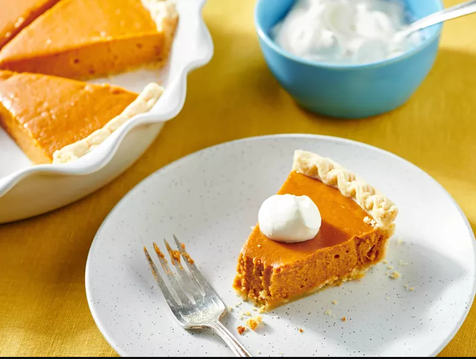

Pumpkin Pie

The one and only pumpkin pie recipe!
Eagle Brand makes this traditional dessert the perfect ending to a Thanksgiving feast.
This pie is incredibly approachable, even for novice bakers. You'll find the full, step-by-step recipe below:
Ingredients needed
- 1 (15 ounce) can pumpkin puree
- 1 (14 ounce) can Eagle Brand Sweetened Condensed Milk
- 2 large eggs
- 1 teaspoon ground cinnamon
- ½ teaspoon ground ginger
- ½ teaspoon ground nutmeg
- ½ teaspoon salt
- 1 (9 inch) unbaked pie crust
Steps:
- Gather all ingredients and preheat the oven to 425 degrees F (220 degrees C).
- Whisk pumpkin puree, condensed milk, eggs, cinnamon, ginger, nutmeg, and salt together in a medium bowl
until smooth.
- Pour into crust. Bake in the preheated oven for 15 minutes.
- Reduce oven temperature to 350 degrees F (175 degrees C) and continue baking until a knife inserted 1 inch
from the crust comes out clean, 35 to 40 minutes. Let cool before serving.
- Enjoy!